Dollar Bonk explose absolument en ce moment. C'est le plus gros gagnant de la semaine, surperformant la majeure partie du marché de la crypto. Et si vous avez surveillé les graphiques, vous vous demandez probablement si c'est encore le bon moment pour acheter ou si vous devriez vous tenir à l'écart de cette pièce en ce moment même. Dans cette vidéo, je vais décrypter exactement pourquoi Bonk s'envole, ce qui rend cette hausse différente de la précédente, et s'il est encore temps d'acheter.
Interface & Outils : Agrégateur de données crypto (Image 1) et plateforme de graphiques financiers TradingView (Image 3).
Contenu textuel & Code : Prix de Bonk à 0,00002231 $ (+61,6% sur 7j) et capitalisation boursière à 1,728 milliard de dollars (Image 1) ; Graphique en chandeliers 1h de BONK/USDT montrant une explosion de prix récente (Image 3).
Action / Démonstration : Visualisation des performances hebdomadaires de Bonk et analyse graphique de la flambée des prix sur TradingView.
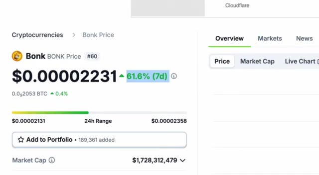
🔍 Agrandir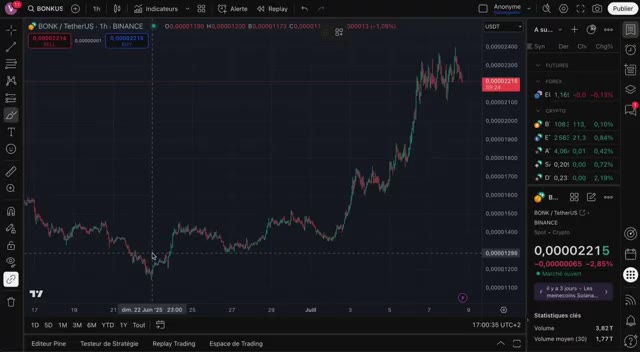
🔍 AgrandirJe vais aussi vous montrer les niveaux que je surveille personnellement, à quoi s'attendre ensuite, et à la toute fin, je révélerai une stratégie que j'utilise en ce moment et qui pourrait transformer cette dynamique en une réelle opportunité. Plongeons dans le vif du sujet. Pour comprendre cette hausse, nous devons regarder au-delà du graphique. Dollar Bonks est désormais bien plus qu'un simple mème. C'est le cœur de l'un des écosystèmes à la croissance la plus rapide sur Boncelana, BonkFund. Et ces derniers temps, il domine l'espace. BonkFund a récemment dépassé PumpFund en termes d'utilisateurs engagés et de performance des tokens, et cela s'est produit juste avant le lancement tant attendu du Pumptoken. Alors que beaucoup s'attendaient à ce que le TGE de Pump Fund draine la liquidité
Interface & Outils : TradingView, X (anciennement Twitter)
Contenu textuel & Code : Graphique de prix cryptographique BONK/USDT, données de marché et de volume sur 24h pour les launchpads (LetsbonkFun à 54.80%, Pump à 35.10%, Believe, Jup Studio, Moonshot).
Action / Démonstration : Analyse technique du cours de BONK et consultation de données textuelles et statistiques sur les parts de marché des plateformes de lancement de memecoins.
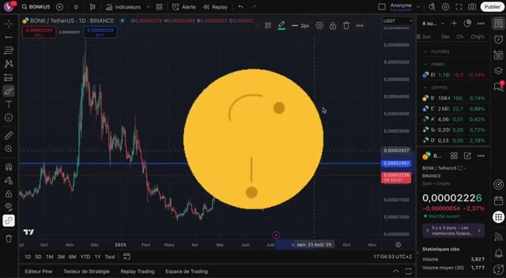
🔍 Agrandir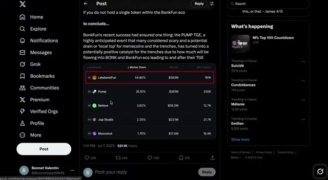
🔍 Agrandir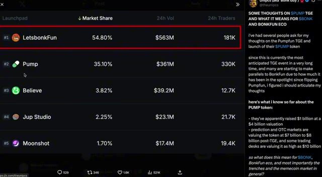
🔍 AgrandirDu côté du marché, ce que nous voyons réellement, c'est l'inverse. Bonk absorbe l'engouement et Bonk Finance gagne des parts de marché considérables, et voici pourquoi. Contrairement à Pumpt Fund, perçu par beaucoup comme extractif en vendant de grandes quantités de Sol, Bonk Fund est profondément intégré dans l'écosystème Solana. Il brûle du Bonk à chaque transaction, il stake du Sol pour soutenir la sécurité du réseau, et il bâtit une culture de créateurs axée sur la communauté qui attire désormais des traders du monde entier, en particulier de Chine.
Interface & Outils : DefiLlama, Twitter/X (Lookonchain) et Dune Analytics.
Contenu textuel & Code : Courbes de croissance des frais cumulés, statistiques de vente de SOL par Pump.fun (969 945 SOL de revenus totaux), et tableaux de données chiffrées sur les volumes de Bonk brûlés mensuellement.
Action / Démonstration : Présentation de graphiques on-chain et de rapports de données pour comparer l'activité économique de Pump.fun et l'impact de Bonk sur le marché.
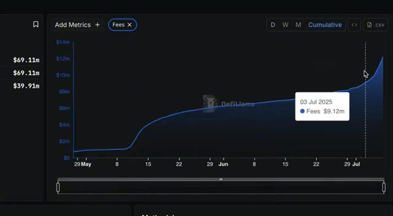
🔍 Agrandir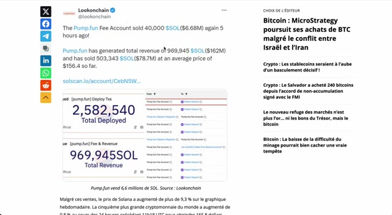
🔍 Agrandir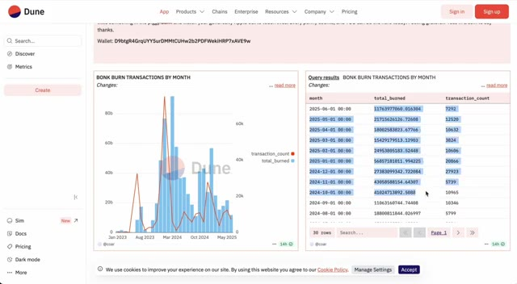
🔍 AgrandirSoyons réalistes. Pump Fund a levé 1 milliard de dollars pour une valorisation de 4 milliards. Mais ce qui est surprenant, c'est à quelle vitesse Bonk Fund les a dépassés, même avec un token qui existait déjà. Et la raison est simple. Bonk Fund redistribue vraiment. 58 % de ses frais servent directement à racheter et à brûler du Bonk. Cela crée une demande réelle et constante.
Interface & Outils : Navigateur web affichant le site d'actualités financières Blockworks et l'interface du réseau social X (Twitter).
Contenu textuel & Code : Titre d'article sur la levée de fonds de 1 milliard de dollars de Pump.fun pour une valorisation de 4 milliards, et tableau chiffré des parts de marché des launchpads crypto (LetsbonkFun à 54.80% / $563M vs Pump à 35.10% / $361M).
Action / Démonstration : Illustration visuelle des données financières et de la comparaison de marché entre Pump.fun et Bonk Fund évoquée dans le commentaire audio.
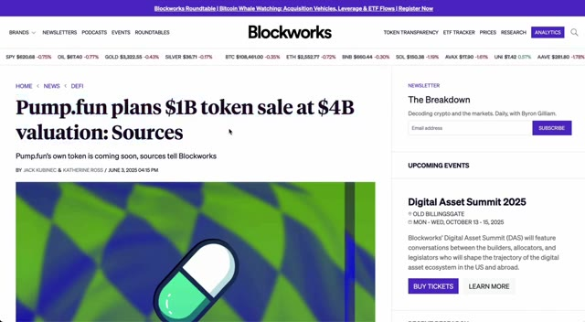
🔍 Agrandir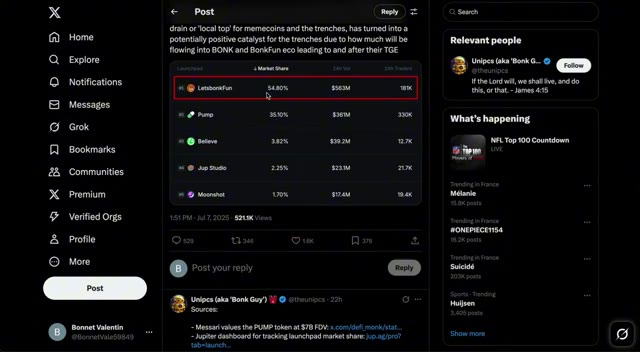
🔍 AgrandirPendant ce temps, le jeton de PumpFun reste flou en termes de tokenomique. Nous ne savons pas quelle quantité ira aux capital-risqueurs, aux initiés, ni quelle est la durée des périodes de blocage. Donc, quand on compare un projet comme PumpFun, évalué entre 4 et 10 milliards de dollars, à Bonk, qui ne vaut que 1,8 milliard de dollars, il est clair que Bonk est encore sous-évalué. Ce qui est encore plus intéressant, c'est que la majeure partie du véritable trading de Bonk ne se fait même plus on-chain. Bonk apparaît à peine sur les DEX de Solana comme Raydium ou Orca. Il est très bas dans le classement en termes de volume. C'est parce que la véritable action s'est déplacée vers les bourses centralisées,
Interface & Outils : Navigateur web, plateforme pump.fun, Crypto Bubbles, interface de DEX décentralisé (Raydium ou similaire)
Contenu textuel & Code : Offre totale de pump.fun (1 000 000 000 000 PUMP), détails de l'IEO sur Gate Launchpad ($600M levés, prix $0.004), statistiques de Bonk (Capitalisation : $1.78B, Volume 24h : $1.11B, performance semaine +65%), graphique RAY/SOL en chandelier (15m).
Action / Démonstration : Présentation des métriques tokenomiques et de levée de fonds de pump.fun, suivie de la visualisation des performances de marché de Bonk et d'un graphique de swap DEX.
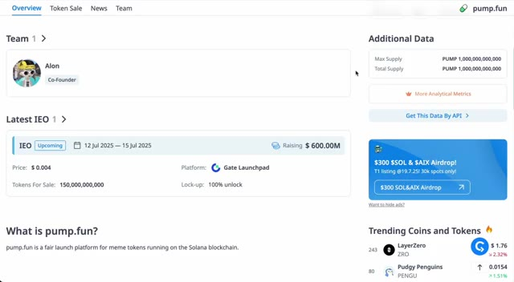
🔍 Agrandir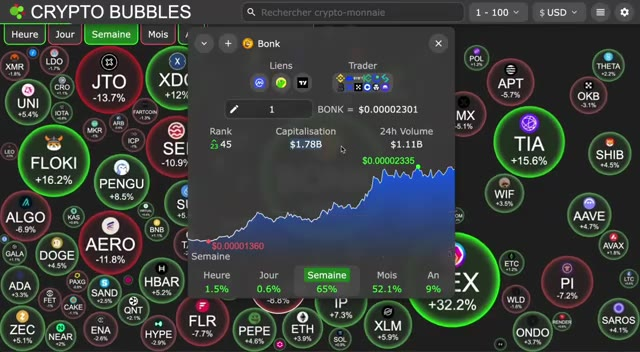
🔍 Agrandir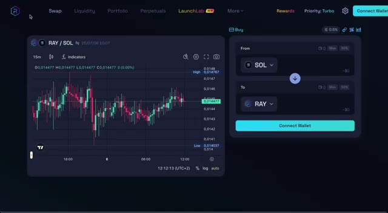
🔍 Agrandiroù le trading de contrats à terme au comptant et perpétuels domine désormais. Ce changement est essentiel pour comprendre ce qui stimule le prix. Et voici quelque chose de crucial. Il y a une corrélation très forte entre l'intérêt ouvert sur les contrats perpétuels de bonk et son prix. Lorsque l'effet de levier s'accumule, le prix a tendance à monter. Et lorsque les traders se retirent, le prix chute. En ce moment, les taux de financement sont positifs, ce qui signifie que la plupart des traders sont acheteurs sur bonk. Ils parient sur une hausse encore plus importante. Cet effet de levier croissant, combiné à une exécution rapide et à des spreads serrés sur les CEX, pourrait être l'un des
Interface & Outils : TradingView et plateforme de données analytiques crypto (CoinGlass).
Contenu textuel & Code : Graphique en chandeliers, outils de mesure de performance, volume d'échange de 620,11M $, intérêt ouvert (Open Interest) à 52,28M $, ratios Long/Short et graphiques de taux de financement.
Action / Démonstration : Analyse de l'évolution du prix de BONK et des métriques de contrats à terme associées.
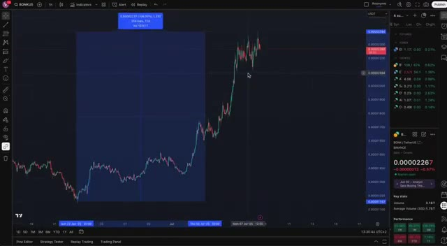
🔍 Agrandir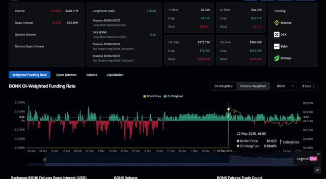
🔍 Agrandirprincipales raisons derrière cette hausse explosive. Ce n'est pas seulement du battage médiatique, c'est la structure du marché à l'œuvre. Posons maintenant la vraie question. Bonk peut-il réellement atteindre un nouveau record historique pour ce cycle ? Eh bien, voici ce que nous avons pour lui. L'écosystème Solana est toujours fort et actif. Les pièces mèmes s'enflamment à nouveau sur tout le marché. Bonk Fun est devenu la principale rampe de lancement sur Solana, devançant complètement Pump Fun. 58 % des frais de plateforme sont désormais utilisés pour acheter et brûler du Bonk.
Interface & Outils : TradingView, Crypto Bubbles (site web de visualisation de données de marché).
Contenu textuel & Code : Graphique en chandeliers japonais pour BONK/USDT avec données de prix (0.00002258 USDT), volume et statistiques clés ; carte thermique (heat map) Crypto Bubbles avec variations hebdomadaires de différentes cryptomonnaies (BONK +63,5%, HEX +29,3%, FLOKI +15,2%, TIA +13,6%).
Action / Démonstration : Analyse technique de la structure de marché et de la hausse explosive de BONK à l'aide d'un outil de mesure de performance temporelle et de prix sur graphique, suivie d'une vue d'ensemble sectorielle.
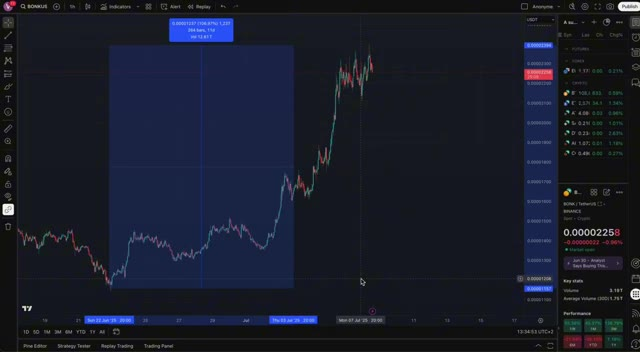
🔍 Agrandir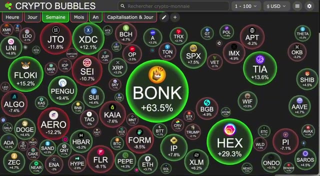
🔍 AgrandirC'est une pression d'achat massive. La communauté est énorme. Plus de 900 000 portefeuilles uniques détiennent du Bonk. Et la plupart des transactions se font désormais sur des bourses centralisées majeures, où il y a un véritable volume et de la liquidité. Avec ce genre de dynamique, je pense qu'il est tout à fait réaliste de s'attendre à ce que Bonk pousse pour un nouveau record historique au cours de ce cycle.
Interface & Outils : Birdeye (agrégateur de données crypto) et WEEX (bourse d'échange centralisée de crypto-monnaies).
Contenu textuel & Code : Graphiques en chandeliers de Bonk, volumes de transactions, indicateurs de liquidité, capitalisation boursière (Market Cap), nombre de détenteurs (950.58K), carnet d'ordres et options de levier.
Action / Démonstration : Présentation de données on-chain sur les détenteurs de Bonk et transition vers l'analyse des bourses centralisées et de la liquidité des paires de trading.
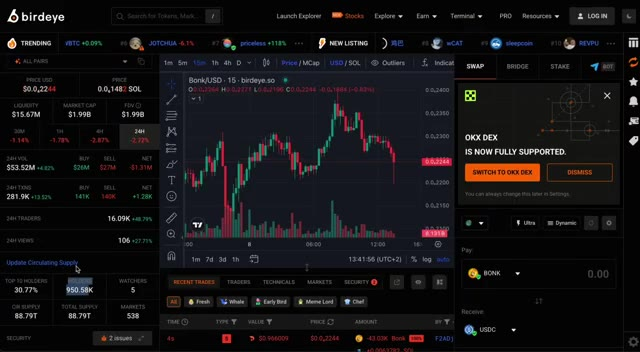
🔍 Agrandir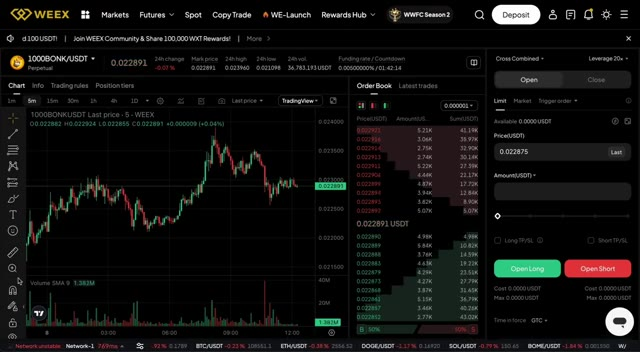
🔍 AgrandirIl pourrait même devenir la pièce mème dominante sur Solana à long terme, surtout si le fonds Bonk continue de croître à ce rythme. Bien sûr, une chose à surveiller est le marché des contrats à terme. Si le financement devient négatif et que l'intérêt à découvert s'envole, nous pourrions assister à un repli. Mais pour l'instant, les acheteurs ont clairement le dessus. Maintenant, si vous vous demandez où je trade Bonk, la réponse est weeks.
Interface & Outils : Coinglass (Dashboard de données de marché crypto et dérivés).
Contenu textuel & Code : Graphique du taux de financement de BONK sur le marché des contrats à terme, affichant les données d'intérêt ouvert (Open Interest), de volume, et les liquidations sur différentes périodes (1h, 4h, 12h, 24h).
Action / Démonstration : Analyse des données de contrats à terme et des taux de financement de BONK en lien avec l'intérêt à découvert.
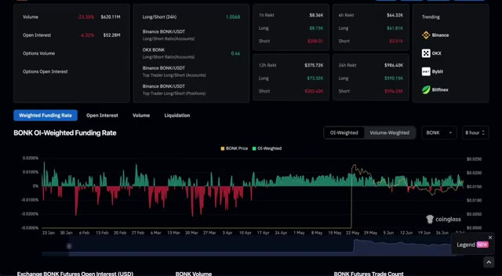
🔍 AgrandirC'est fluide, fiable, et parfait pour le trading au comptant comme sur marge. Et voici le meilleur. Si vous vous inscrivez en utilisant le lien dans la description, vous obtiendrez un bonus de 100 USDT instantanément. Tout ce que vous avez à faire, c'est créer votre compte, vérifier votre e-mail et votre téléphone. C'est tout. Aucun dépôt requis. Et si vous décidez de déposer et de commencer à trader, il y a aussi des récompenses supplémentaires, incluant un bonus sur dépôt allant jusqu'approximativement 300 $ si vous financez votre compte avec au moins 2 000 $.
Interface & Outils : Plateforme d'échange de cryptomonnaies WEEX
Contenu textuel & Code : Offres de bonus de bienvenue, paliers de dépôt (100$, 500$, 1000$, 2000$), et conditions de récompenses pour nouveaux utilisateurs (150 USDT et 100 USDT).
Action / Démonstration : Présentation des avantages et des bonus d'inscription pour les nouveaux utilisateurs de la plateforme WEEX.
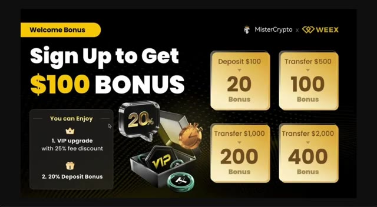
🔍 Agrandir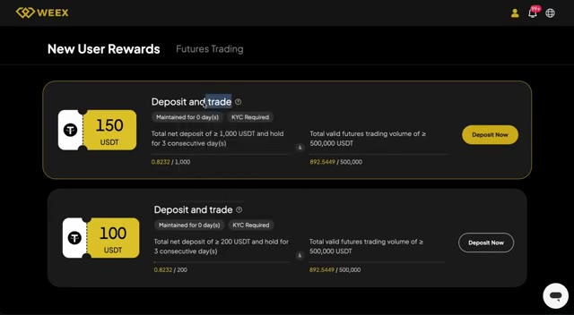
🔍 AgrandirCe bonus est uniquement disponible via le lien ci-dessous. Donc, si vous voulez surfer sur cette dynamique avec Bonk, ne manquez pas l'opportunité. Que ce rallye de Bonk continue ou ralentisse, une chose est claire. Le Bonk Fund a complètement inversé la tendance. Ce qui était censé être un énorme drainage de liquidité issu du TGE de Pump se transforme maintenant en un catalyseur haussier pour Bonk et tout l'écosystème du Bonk Fund.
Interface & Outils : WEEX exchange, TradingView, X (Twitter)
Contenu textuel & Code : Soldes à 0 USDT, graphique de prix crypto (BONK/USDT), parts de marché des lancements (LetbonkFun 54.80%, Pump 35.10%)
Action / Démonstration : Présentation de la plateforme WEEX, analyse de la tendance haussière de Bonk sur TradingView et consultation d'une statistique sur X.
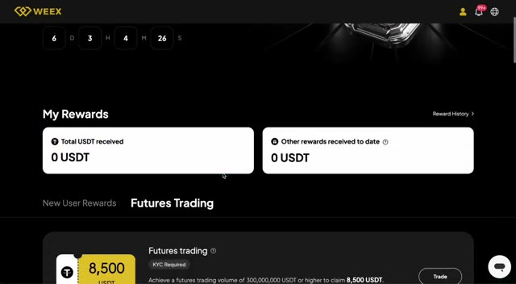
🔍 Agrandir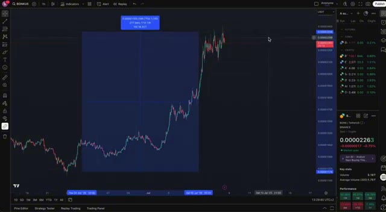
🔍 Agrandir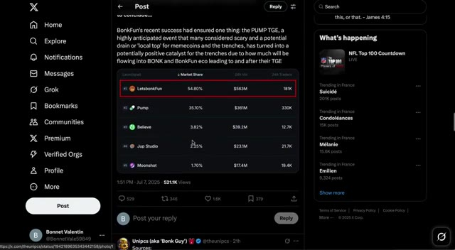
🔍 AgrandirJe surveille personnellement les graphiques et les taux de financement perpétuels de très près, et si nous parvenons à franchir cette zone de résistance, nous pourrions voir un autre mouvement de plus 80 % en un rien de temps. Merci d'avoir regardé. N'oubliez pas d'aimer, de vous abonner pour plus d'analyses crypto en temps réel, et de laisser un commentaire si vous surfez sur la vague Bonk en cette période. Voyons jusqu'où celui-ci peut aller.
Interface & Outils : TradingView, Crypto Bubbles
Contenu textuel & Code : Graphique de prix historique de BONK avec une ligne de résistance horizontale ; vue d'ensemble de la performance hebdomadaire du marché crypto via Crypto Bubbles mettant en avant BONK (+63.5%) et HEX (+29.3%).
Action / Démonstration : Analyse technique du graphique de prix de BONK et surveillance des performances du marché sur Crypto Bubbles.
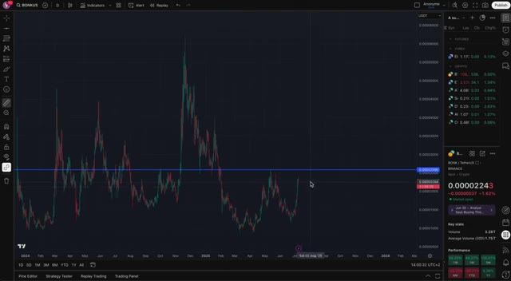
🔍 Agrandir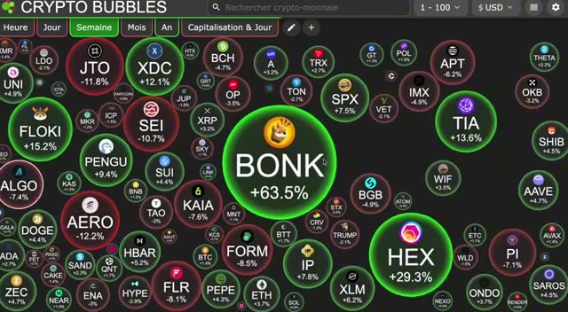
🔍 Agrandir